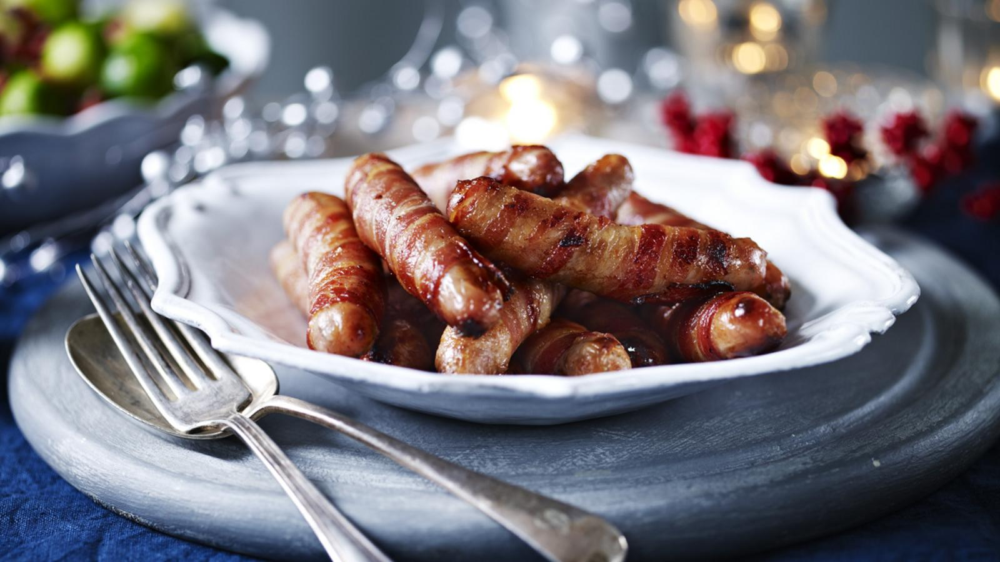

Pigs in blankets

Pigs in blankets are too delicious to be reserved for a one-off Christmas side dish - try them as a party snack or with roast chicken. They take no time to make and will be just how you like them.
Ingredients
- 8 thin slices streaky bacon
- 16 chipolata sausages
- cocktail sticks, to secure the bacon
Steps
- Preheat the oven to 200C/180C Fan/Gas 6.
- Place the bacon on a chopping board, then using the side of the knife, stretch and flatten the bacon until about half as long again
- Cut each strip of bacon in half across, then wrap each piece around a chipolata, securing with cocktail stick
- Place in a roasting tray and roast for 15 minutes until golden-brown and cooked through.